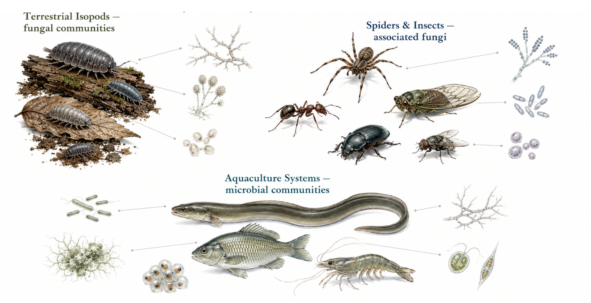

절지동물 연관 진균과 양식 환경의 미생물 군집
진균 군집 연구는 식물과 토양을 중심으로 이루어져 왔습니다. 동물의 몸에 연관된 진균과 사람이 만든 사육 환경의 미생물 군집은 상대적으로 덜 알려져 있습니다.
육상 등각류와 거미, 곤충의 연관 진균을 조사하고, 양식 시스템에서 미생물 군집이 어떻게 형성되고 변화하는지를 함께 살펴봅니다.
공벌레와 쥐며느리 같은 육상 등각류의 연관 진균 군집을 조사해 왔습니다. 도시공원 공벌레에서 어떤 진균이 나타나는지 확인하는 데에서 시작해, 숙주의 성별이 군집에 영향을 주는지를 살펴보았습니다.
이어진 연구에서는 성별보다 서식지가 군집의 차이를 더 잘 설명했습니다. 서로 다른 두 등각류 종의 진균 군집을 비교한 연구도 진행했습니다.
도시 공원과 산림의 무당거미를 대상으로 연관 진균의 다양성을 조사하고, 같은 종에서 환경에 따라 어떤 차이가 나타나는지를 비교했습니다.
곤충에서는 매미에서 곤충병원성 진균 Metarhizium viridulum을 분리해 국내에서 처음 보고했습니다.
양식 시스템은 사육 방식과 수질을 비교적 명확하게 통제할 수 있어, 조건 변화가 미생물 군집에 미치는 영향을 보기에 적합합니다.
바이오플락 기술이 뱀장어 양식수의 미생물 군집을 어떻게 재편하는지, 그 변화가 생존율과 어떤 관계를 갖는지를 조사했습니다. 순환여과양식시스템에서는 질산화가 자리 잡을 때 담수 미생물의 다양성이 달라지는 양상을 추적했고, FLOCponics 시스템에서는 수질 변화에 따라 진균 군집이 교체되는 과정을 살펴보았습니다.
플라스틱 분해 진균처럼 미생물의 기능을 활용하는 연구도 함께 진행하고 있습니다.

동물 연관 미생물 연구의 흐름 — 숙주 채집과 시료 처리, 마이코바이옴 분석, 그리고 양식 환경의 미생물 군집 조사
그림을 누르면 원본 크기로 열립니다